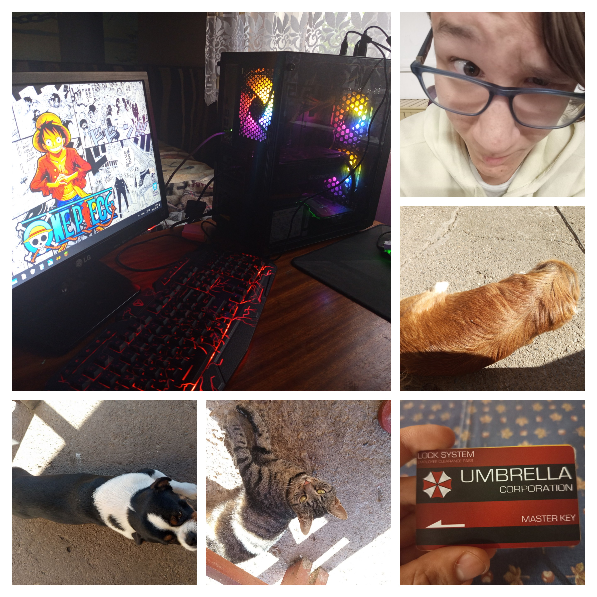

Halmajon lakom 15 éves Kandós diák vagyok Miskolcon. Szabadidőmben videójátékozom, futok és biciklizek vagy zenét hallgatok. Általában a gépemen Counter-Strike 2-vel játszom vagy Battlefieldel játszom. Zenét is szoktam hallgatni, kedvenc bandáim/ előadóim a Linkin Park, Skillet, Three days grace. Imádom a rockot, klasszikust is, mint az AC/DC meg hasonlók. Szeretek még új dolgokat tanulni HTML-ben hogy fejlesszem a tudásomat. Imádom a történelmet, középkor és a II. VH a kedvenc korszakom.
A tanulmányaimat nézzük meg röviden, a Halmaji Gárdonyi Géza Általános Iskolában fejeztem be az általános iskolát, kitünő tanuló voltam, jelenleg a Miskolci Kandó Kálmán Informatikai Technikum diákja vagyok, szoftverfejlesztő szakirányba szeretnék elmenni. Később szeretnék egyetemre is menni de nincs még elképzelésem arról hogy pontosan hova vagy mire
